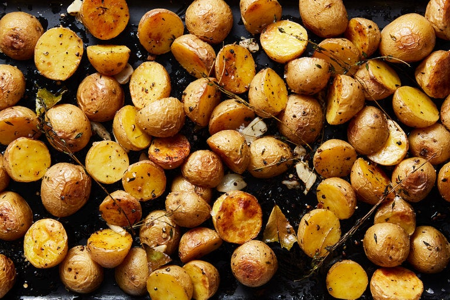

DUCK FAT POATOES!!!

Alright, in all fairness this is an awesome recipe. Duckfat is both leaner than most cooking oils/fats but is also incredibly flavorful. This recipe isn't too tough and will most likely impress anyone you are cooking for! Let me know what you think in the comments below...after I figure out how to let you make comments!
Ingredients
- 3pounds baby or small potatoes, halved if large
- 1/4 cup duck fat, melted
- 2 1/2 teaspoons kosher salt, plus more to taste
- 1/2 teaspoon ground black pepper
- 6 thyme sprigs
- 1 bay leaf, torn into pieces
- 6 garlic cloves, smashed and peeled
Directions
- Heat oven to 450 degrees. On a rimmed baking sheet, toss together the potatoes, duck fat, salt and pepper. Lay thyme sprigs and bay leaves on top.
- Roast for 30 minutes, then toss the garlic into the potatoes and reduce oven heat to 350 degrees. Continue to roast until potatoes are fork-tender, another 15 to 25 minutes. Remove thyme and bay leaves and serve, or let cool for up to an hour then reheat, uncovered, at 350 degrees just before serving.
- Enjoy your POTATOES...I honestly thought it was more steps than this
Thats all three recipes now!!!
Home